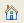

Az információs központ által biztosított grafikus felhasználói felület segítségével keresheti ki és tekintheti meg a termékdokumentációt.
A Tartalom lap ( ) a nézet alján megjeleníti a témakörök címét az információs központban. A címek egy tartalomjegyzékben vagy egy navigációs fa struktúrában jelennek meg. Ha meg szeretné jeleníteni egy témakör tartalmát, akkor kattintson a
témakör címére a navigációs fában.
) a nézet alján megjeleníti a témakörök címét az információs központban. A címek egy tartalomjegyzékben vagy egy navigációs fa struktúrában jelennek meg. Ha meg szeretné jeleníteni egy témakör tartalmát, akkor kattintson a
témakör címére a navigációs fában.
A Vissza ( ) és az Előre (
) és az Előre ( ) ikonra kattintva járhatja be a megtekintett témakörök történetét.
) ikonra kattintva járhatja be a megtekintett témakörök történetét.
Kattintson a Kezdőlap () ikonra az információs központ kezdőlapjának megnyitásához.
Kattintson a Tartalom lapra () a nézet alján, ha vissza akar térni a Tartalom lapra egy keresési feladat végrehajtása után.
Ha rákattint egy hivatkozásra a pillanatnyilag megjelenített témakörben, akkor megnyílik egy új témakör, a navigációs fa pedig automatikusan megváltozik, és az új témakör helyét mutatja alapértelmezésben.
- Keresse meg az aktuális témakört a navigációs fában, és kattintson a Megjelenítés a tartalomjegyzékben (
 ) elemre a Tartalom nézet eszköztárán.
) elemre a Tartalom nézet eszköztárán. - A navigációs fa és a témakör panel mindig legyen szinkronban; kattintson az Összekapcsolás a tartalommal (
 ) elemre a Tartalom nézet eszköztárán. A funkció letiltásához kattintson ismét a gombra.
) elemre a Tartalom nézet eszköztárán. A funkció letiltásához kattintson ismét a gombra.
A billentyűzet segítségével végzett navigációról az alábbi témakörben talál információkat: Billentyűparancsok és gyorsbillentyűk.